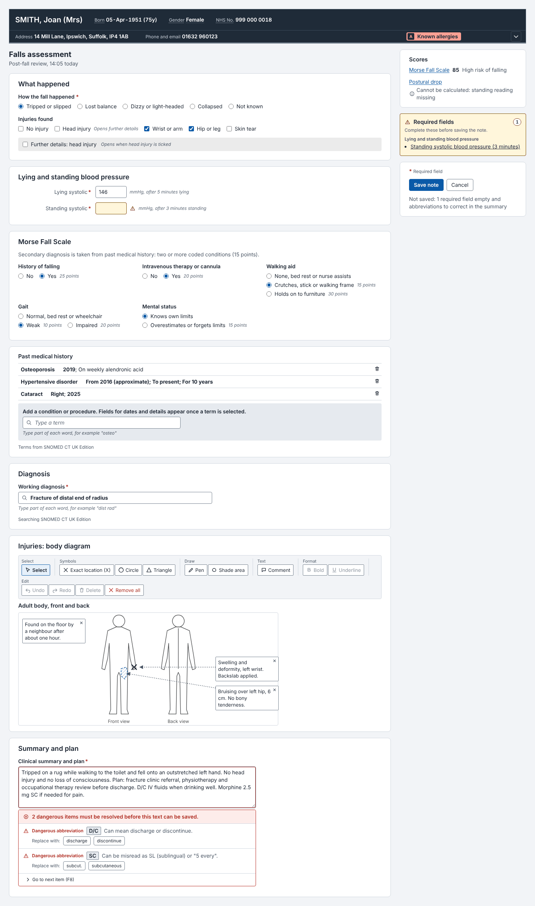
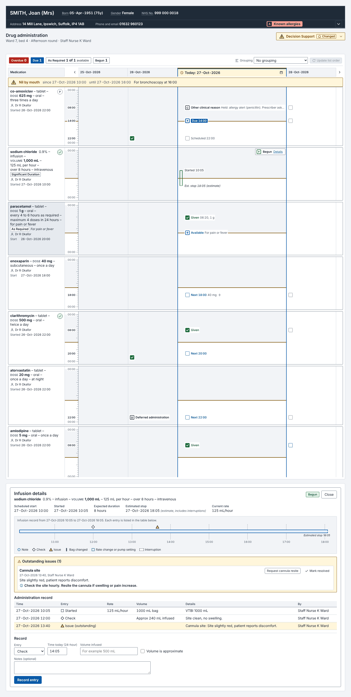
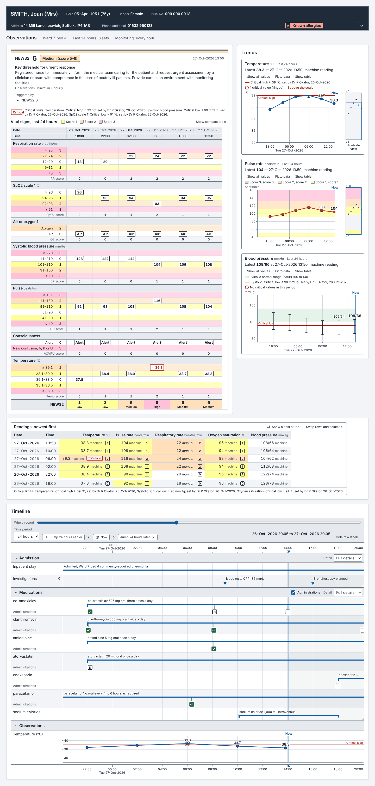
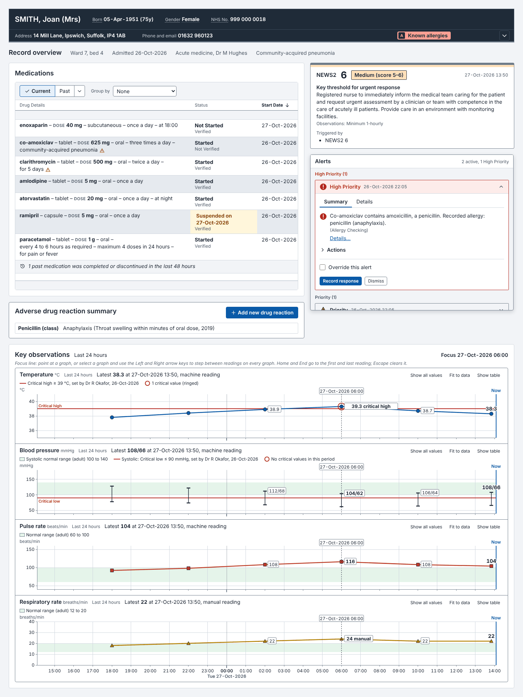
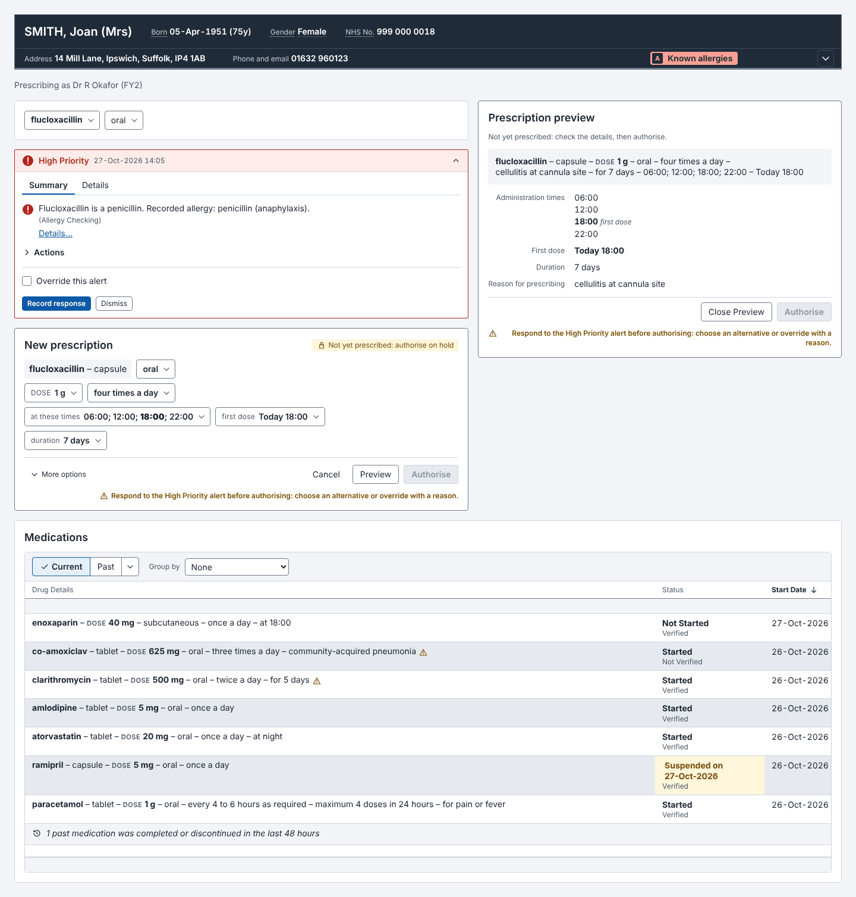
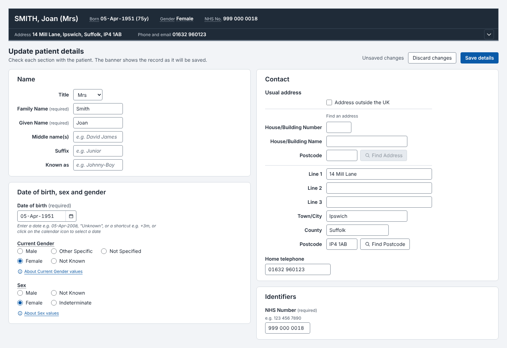
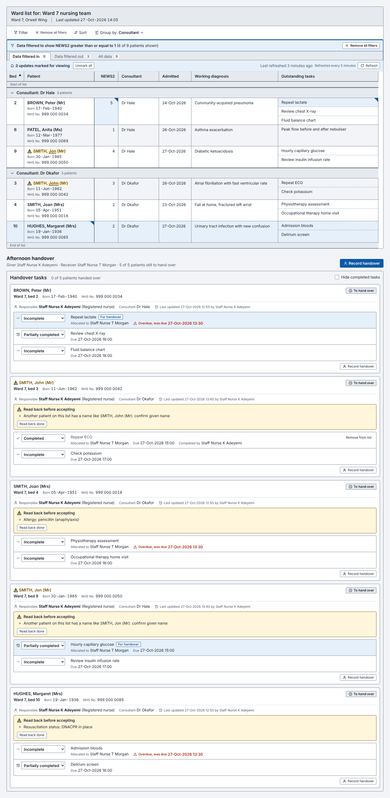
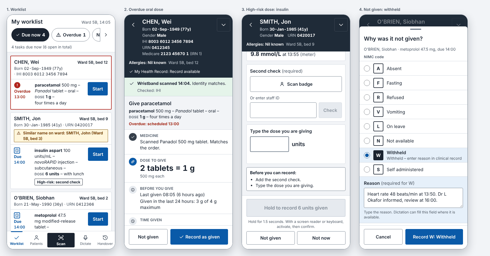
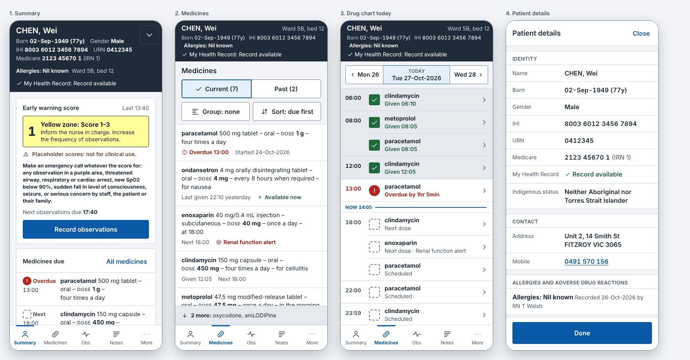
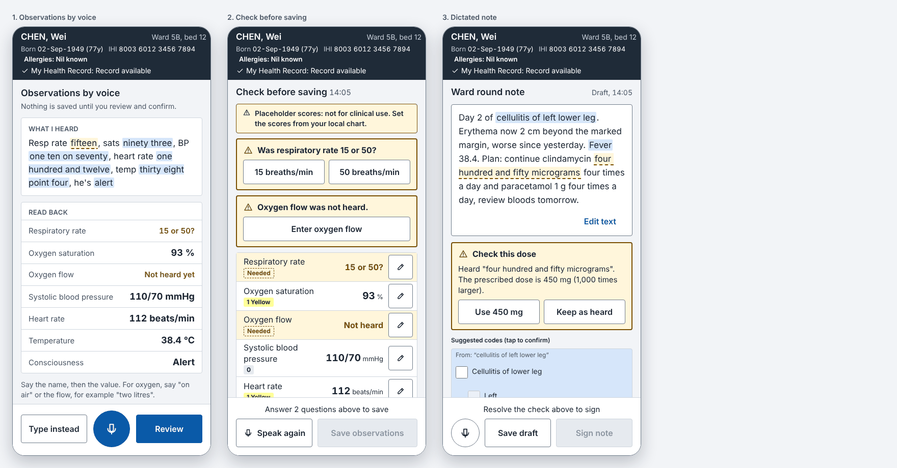

Clinical CUI examples
Worked screens built only from the library's components, to show how they fit together. Each page has a region switch (UK, Australia, New Zealand) and a light and dark theme. The source for every example is in examples/; read it next to the rendered page. Patients and data are fictional.
Desktop screens

Falls assessment noteA structured note after an inpatient fall: choice groups with a data-triggered reveal, blood pressure with previous values, a calculated Morse Fall Scale, coded past history and diagnosis from an asynchronous terminology search, a body diagram and abbreviation-checked free text. Save lists any required field still empty.GB · AU · NZ
Drug roundThe drug administration chart during an afternoon round: regular, when-required and infusion lines, the patient nil by mouth, regional not-given codes, decision support status, and the infusion record opened from its line. Recording a dose updates the chart.GB · AU · NZ
Observation reviewVital signs over the last 24 hours on the regional early warning chart, focused graphs with thumbnails and critical limits, the readings as a table, and a timeline of the admission and medicines alongside.GB · AU · NZ
Patient record overviewThe record a clinician opens first: patient banner, current medications beside the allergy and adverse reaction summary, and the early warning score, key observations and decision support alerts.GB · AU · NZ
Prescribing a new medicineSearch a formulary, prescribe in sentence layout, check against recorded allergies and current medicines (an unanswered High Priority alert holds Authorise, with the reason shown), preview and authorise. The authorised line joins the medications list, with its alert icon if one was raised.GB · AU · NZ
Patient registrationUpdating a patient record: name, date of birth, sex and gender, region identifiers (NHS number; IHI, URN, Medicare with valid to date and DVA; NHI with dormant handling), address lookup and telephone, with the AU and NZ questions shown only in their region. The patient banner above previews the record as it is typed.GB · AU · NZ
Ward list and handoverA nursing ward list filtered, sorted and grouped through DataToolbar, FilterDialog and header filters, with region identifiers, the similar-name warning, update marks and task sublists. Below it, the handover list and the handshake that transfers responsibility.GB · AU · NZMobile flows

Nurse medication roundThe task-first worklist (direction B) with an overdue oral dose after a matching wristband scan, a high-risk insulin dose with second check, typed read-back and hold-to-confirm, and a withheld dose with the region’s not-given codes. Recording updates the worklist and offers an undo window.AU · NZ · GB
Patient review on a phoneThe patient-first record (direction A): summary with the early warning score, medicines list, one-day drug chart and the full patient details sheet. A patient switch, from the ward list or a wristband scan, goes through PatientSwitchGuard and changes every screen.AU · NZ · GB
Dictation on a phoneObservations by voice with a live transcript and read-back, a review that blocks saving until the oxygen question and an ambiguous number are answered, and a dictated note whose micrograms-for-mg dose must be resolved before signing. Dictation never saves or signs by itself.AU · NZ · GBEvery component on its own
Clinical noting
- AnnotatedGraphicCanvas
- CalculatedValue
- CarePathwayCycle
- CarePathwayStack
- ClinicalCheckboxGroup
- ClinicalRadioGroup
- ClinicalStatement
- FormField
- FreeTextAnnotation
- GraphicPicker
- GraphicToolbar
- MissedRequiredFieldsPanel
- NaturalDateInput
- NoteEntryList
- PathwayTimeline
- PreviousValuesPopover
- RepeatableFieldGroup
- RequiredFieldIndicator
- RevealSection
- SectionOrderToggle
- SectionSearch
- StatementList
- TemplateBrowseTree
- TemplateSearch
- TemplateSuggestionsPanel
- TemplateTriggerText
Dates and times
- CalendarPicker
- DateDisplay
- DateInput
- DateTimeDisplay
- DisambiguationPrompt
- DurationDisplay
- DurationInput
- TimeDisplay
- TimeInput
- TimeRangeDisplay
Decision support
- AlertContainer
- AlertIndicator
- AlertItem
- DecisionSupportChangeToast
- DecisionSupportStatusIndicator
- InformationWindow
- PreferenceChoiceList
- PreferenceIcon
Display standards
- Abbreviation
- AbbreviationCheckedTextArea
- AlertSymbol
- ClinicalTermList
- EncodableTextEditor
- IconButton
- IconToolbar
- KeyboardShortcutList
- ShortcutProvider
- TruncatedText
Drug administration
- AdministrationEventIcon
- AdministrationRecordingForm
- AdrDetailsView
- AdrRecordingDialog
- AdrSummaryList
- DayNavigator
- DrugAdministrationChart
- InfusionDetailView
- NilByMouthBanner
Foundations
Handover
Lists and filtering
- ColumnChooser
- DataToolbar
- FilterDialog
- FilterNotification
- HeaderCellFilter
- HistoricalSnapshotBanner
- PatientIdentificationCell
- PatientList
- SortDialog
- SortIndicator
- SubList
- UpdateMarker
Medications
- AdrRiskList
- CascadeSelector
- DrugSearch
- MedicationActionSummaryDialog
- MedicationLine
- MedicationsList
- PrescriptionDetailForm
- PrescriptionForm
- PrescriptionPreview
- QuickList
- SelectionTrail
- TemplatePrescriptionList
- TemplateReopenControl
Mobile screens
- DoseAdministrationFlow
- IdentityScanResult
- MobileDrugAgenda
- MobileMedicationsList
- MobileNavBar
- MobilePatientHeader
- MobileSummary
- MobileTabBar
- NotGivenSheet
- PatientDetailsSheet
- PatientSwitchGuard
- Worklist
- WorklistTaskCard
Mobile touch inputs
- ActionBar
- BottomSheet
- ChipGroup
- FullScreenSheet
- HoldToConfirmButton
- NumberPad
- ObservationKeypadEntry
- ReasonCodePicker
- SecondCheckField
- SegmentedControl
- SheetContainerProvider
- TouchButton
- TouchDateTimePicker
- TypedReadBackConfirm
- UndoToast
Mobile voice
Patient identification
- AddressDisplay
- AddressInput
- DvaNumberInput
- EthnicityDisplay
- EthnicityInput
- GenderDisplay
- HpiNumberDisplay
- IhiDisplay
- IhiInput
- IndigenousStatusDisplay
- IndigenousStatusInput
- IwiInput
- LabelledValue
- MaoriDescentInput
- MedicareNumberDisplay
- MedicareNumberInput
- MicroPatientBanner
- MyHealthRecordStatus
- NhiDisplay
- NhiInput
- NhsNumberDisplay
- NhsNumberInput
- PartialDateOfBirthDisplay
- PartialDateOfBirthInput
- PatientBanner
- PatientIdentifierDisplay
- PatientIdentifierInput
- PatientNameDisplay
- PatientNameInput
- ProtectionFlagInput
- SensitiveCharacteristicDisplay
- SensitiveCharacteristicInput
- SexGenderInput
- TelephoneNumberDisplay
- TelephoneNumberInput
Terminology
- AxisModifierWarning
- ConceptFlyout
- HierarchyBrowserDialog
- MandatoryQualifierSelect
- MeasuredValueInput
- NoMatchReport
- ShorthandResolver
- SingleConceptEncoder
- SpellCheckPopover
- SubsetFilterControl
- SuggestedMatchList
- TerminologySearch